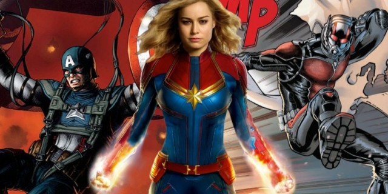
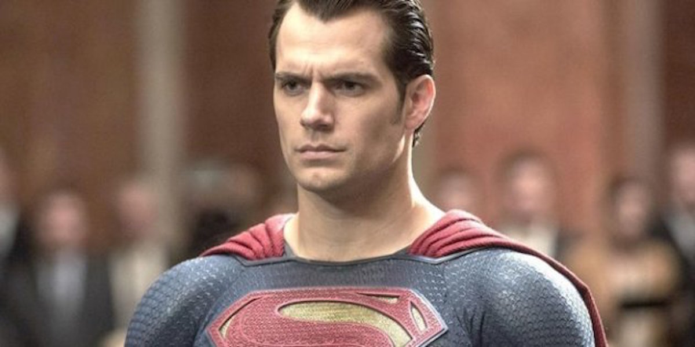

THE BIG APPEARANCE
Captain Marvel set to rescure the fallen Avenger's characters, Sep 7, 2018
The end of Avengers: Infinity War left many audience members in shock and asking questions about how the (remaining) Avengers could possibly fix the damage Thanos had wrought. Those who sat through the credits got one potential answer: Captain Marvel. But how exactly will one Carol Danvers come into play come Avengers 4?...While the Infinity Gauntlet gives Thanos unlimited power over reality, time, space, mind, and the soul, making him pretty much unable to be defeated when he’s on his game, Captain Marvel does have one huge advantage over the heroes who have faced off against him so far: she can absorb anything Thanos sends at her. As long as Thanos sticks to physical attacks, Carol can absorb them and send them right back at him. While this probably won’t be enough to defeat him, it might be enough to distract or detain him just enough while some master plan takes way. (And if Captain Marvel and Thor manage to tag-team against Thanos…) Carol may not be the one who lands the final punch against Thanos or the Infinity Gauntlet from Thanos’ hand, she is likely to play a critical role in the battle. And, with many of the original Avengers crew set to put up the tights after Avengers 4, Captain Marvel will almost certainly be a pivotal part of the new team in the inevitable Avengers 5.
HENRY CAVILL HANGS UP THE CAPE
Henry Cavill quits playing Superman, Sep 2, 2017
Talks broke down for a cameo in 'Shazam!' due to scheduling conflicts, and the door is now closing on other potential appearances for the actor.
Henry Cavill, who has played Superman in three films, is parting ways with Warner Bros., sources tell The Hollywood Reporter. The British actor, who first donned the blue suit for 2013's Man of Steel, and then starred in 2016's Batman v Superman: Dawn of Justice and last year's Justice League, is said to be hanging up the red cape.